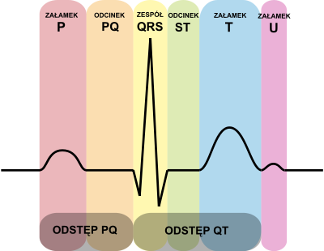
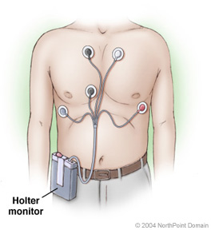

Elektrokardiografia (EKG) – zabieg diagnostyczny wykorzystywany w medycynie przede wszystkim w celu rozpoznawania chorób serca.
Pomijając EKG wykonywane w czasie operacji na sercu, jest to metoda pośrednia polegająca na rejestracji elektrycznej czynności mięśnia sercowego z powierzchni klatki piersiowej w postaci różnicy potencjałów (napięć) pomiędzy dwoma elektrodami, co graficznie odczytujemy w formie krzywej elektrokardiograficznej, na specjalnym papierze milimetrowym bądź na ekranie monitora.
Warto zauważyć, że EKG nie jest niezawodnym kryterium rozpoznania choroby: istnieje możliwość prawidłowego elektrokardiogramu przy schorzeniach kardiologicznych oraz nieprawidłowy zapis czynności elektrycznej przy prawidłowym stanie klinicznym.

W powstającym potencjale czynnościowym wyróżniamy pięć faz:
faza 0 (szybka depolaryzacja) – zależy od szybkiego dośrodkowego prądu sodowego
faza 1 (wstępna szybka repolaryzacja) – dośrodkowy prąd chlorkowy i odśrodkowy prąd potasowy
faza 2 (powolna repolaryzacja) – tzw. faza plateau (stabilizacja potencjału równowagą pomiędzy dośrodkowym prądem wapniowo-sodowym a odśrodkowym prądem potasowym)
faza 3 (szybka repolaryzacja) – przewaga odśrodkowego prądu potasowego nad wygasającym dośrodkowym prądem wapniowo-sodowym
faza 4 (polaryzacja) – faza spoczynku, polaryzacji
Komórki rozrusznikowe serca mają zdolność do tzw. spontanicznej powolnej depolaryzacji w czwartej fazie potencjału czynnościowego.
Holter EKG - urządzenie rejestrujące pracę serca (EKG), w sposób ciągły, przez 24 godziny na dobę w celu późniejszej, szczegółowej, często komputerowej analizy. Starsze urządzenia zapisywały dane na standardowej kasecie magnetofonowej C120 z bardzo małą prędkością (2mm/s), nowsze korzystają z pamięci flash. Ważnymi cechami monitora holterowskiego są niewielkie rozmiary i możliwość przymocowania do ciała lub ubrania pacjenta w sposób nie krępujący ruchów. Umożliwia to normalną aktywność życiową ze sportem i snem włącznie. Nie wolno jednak wchodzić z holterem pod prysznic lub zanurzać się w wodzie.
Wynalazcą był amerykański biofizyk Norman Holter, stąd nazwa.
